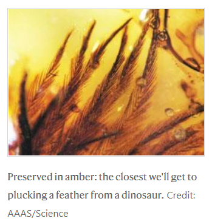

| Feature Article - January 2012 |
| by Do-While Jones |
"If it looks like a duck, swims like a duck, quacks like a duck, and has feathers like a duck, then it probably is a DINOSAUR."
 |
|---|
The title of this essay was inspired by the classic 1932 Marx Brothers comedy, Horse Feathers. Sadly, most readers are too young to make the connection with the goofy professors of Huxley and Darwin colleges portrayed in that film. But what was written at the end of last year about dino feathers in the scientific literature is funnier than what was written in Horse Feathers, so this will be an entertaining column, anyway.
In our August newsletter, we reported that scientists now admit that Archaeopteryx was not a missing link between dinosaurs and birds, 1 so we don't need to cover that ground again.
In September, there were several articles about dinosaur feathers found in amber. Roughly 4,000 amber samples from a particular location in Canada had been collected over the years and stored in various museums. Some dedicated scientists examined all of them, looking for feathers, and found 11 samples that contained feathers. They analyzed them, and reported their findings in the professional literature.
|
The amber samples are between 70 and 85 million years old, and come from a site called Grassy Lake in western Canada that was once home to a conifer forest. The site is well known for the wide range of insects found preserved in its amber. ... Because the amber-encased feathers are not associated with body fossils, the researchers cannot be sure whether they come from birds or from non-avian dinosaurs. Both were present in prehistoric Canada 70-85 million years ago. But the authors do make some guesses. 5 |
They don't know what creatures these feathers came from, so they are guessing. They guess the feathers came from dinosaurs because they presume the amber samples are tens of millions of years old. The entire analysis is based on false evolutionary assumptions. Specifically,
|
Feathers' evolutionary origin remains murky, but palaeontologists propose that they started off as simple, flexible filaments similar to those in the coat of 'dino fuzz' that covered the small predatory dinosaur Sinosauropteryx. From there, feathers adapted to become complex branching structures, eventually culminating in the asymmetrical flight feathers of the early bird Archaeopteryx and its living relatives. 5 |
The starting assumption is that feathers must have evolved from something. Everything after that is speculation about how they must have evolved from something.
Here's how the authors justify their assumption that the feathers did come from dinosaurs.
|
Although neither avian nor dinosaurian skeletal material has been found in direct association with amber at the Grassy Lake locality, fossils of both groups are present in adjacent stratigraphic units. Hadrosaur footprints are found in close association with the amber, and younger (late Campanian and Maastrichtian) strata of western Canada contain diverse nonavian dinosaur and avian remains. There is currently no way to refer the feathers in amber with certainty to either birds or the rare small theropods from the area. However, the discovery of end-members of the evolutionary-developmental spectrum in this time interval, and the overlap with structures found only in nonavian dinosaur compression fossils, strongly suggests that the protofeathers described here are from dinosaurs and not birds. 5 |
They haven't found ANY skeletons of birds or dinosaurs where the amber was found; but they found some in adjacent stratigraphic units. "Adjacent" in this context generally means, "immediately above" or "immediately below." So they found skeletons in the rock layers just above or below the layer containing the amber. But since evolutionists believe that layers represent millions of years of time, that means the feathers are separated from the fossils by millions of years.
The analysis is also based on the "evolutionary-developmental spectrum." In plain English, an evolutionist has proposed that feathers evolved through five stages, numbered with Roman numerals.
|
Canadian amber provides examples of stages I through V of Prum's evolutionary-developmental model for feathers. 5 |
Since feathers from all five stages of supposed evolution were discovered in amber that is from the same time period, there is no evidence of sequential evolution. But their conclusion is that because they found Stage I feathers, they must have come from dinosaurs.
Then, in October, the journal Nature said this:
|
The almost perfectly complete fossil of a young theropod dinosaur - including some preserved hair and skin* (see update below) - was unveiled yesterday by scientists from the Bavarian paleontological and geological collections (BSPG) in Munich, Germany. BSPG conservator Oliver Rauhut described it as the best preserved dinosaur skeleton to have ever been found in Europe. *UPDATE: As many of you noted in the comments, dinosaurs are not known to have had hair. The word was widely used by German-language media, but it is likely that the dinosaur did not have hair, but protofeathers, fuzzy, filament-like precursor to feathers, seen in other theropods. 5 |
They found evidence of hair, but since dinosaurs are know to have had feathers, they must really have found feathers that looked like hair. Believing is seeing!
Evolutionary bias is so strong that scientists are unable to view the data objectively.
|
Although they offer limited insight concerning the identity or behavior of their bearer, their structure and pigmentation bear directly on feather evolutionary stages. 5 |
They don't know what kind of creatures these feathers came from, but it still tells them something about evolution! Where are the science police?
| Quick links to | |
|---|---|
| Science Against Evolution Home Page |
Back issues of Disclosure (our newsletter) |
| Web Site of the Month |
Topical Index |
Footnotes:
1
Disclosure, August 2011, "Archaeopteryx Abandoned"
2
Switek, Nature, 15 September 2011, "Amber inclusions showcase prehistoric feathers-Fossils could help to reveal how dino feathers first evolved", http://www.nature.com/news/2011/110915/full/news.2011.539.html
3
ibid.
4
McKellar, et al., Science, 16 September 2011, "A Diverse Assemblage of Late Cretaceous Dinosaur and Bird Feathers from Canadian Amber", pages 1619-1622, https://www.science.org/doi/10.1126/science.1203344
5
ibid.
6
Nature News Blog, 13 Oct 2011, "Stunningly intact dinosaur fossil found in Germany", http://blogs.nature.com/news/2011/10/stunningly_intact_dinosaur_fos.html
7
ibid.